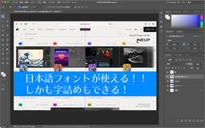
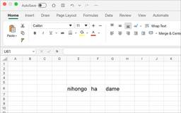
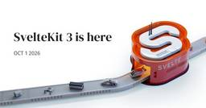
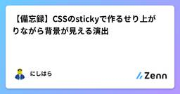
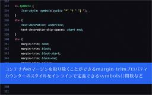

直近1週間の人気フィード
はてなブックマーク数を元に新着優先で並べ替え

Deno開発元がCloudflareに合流。Denoの開発は終了へ、今後はCloudflare WorkersとDurable Objectsのオープンソース実装に注力 113 Publickey
113 Publickey
JavaScriptランタイム「Deno」の開発元であるDeno LandとCloudflareは、Deno LandがCloudflareに合流すると発表しました。CloudflareによるDeno Landの買収と見られます（Deno ...
2日前

PhotoshopやIllustratorをオープンソースで再構築した「Crafting Apps」が日本語フォント、UIの日本語化に対応 418 コリス
コリス
10/5に紹介した、PhotoshopやIllustratorをオープンソースで再構築した「Crafting Apps」が早くも日本語フォント、UIの日本語化に対応した模様。 下記の画像はCrafting AppsのPh […]
7日前

これには驚いた！ 今度はExcelやWordやPower Pointをオープンソースで再構築、Win、Mac、Linux、Web対応で無料 253 コリス
今週はCrafting Appsの記事ばかりになっています。 Photoshopを再構築したオープンソース版「PhotoCraft」の日本語対応など、Adobeのアプリ7種類を毎日のようにアップデートしている中、なんとE […]
6日前

Webアプリフレームワークの「SvelteKit 3」正式リリース。設定をViteに集約、型安全やエラー処理の改善など 16 Publickey
Webアプリケーションフレームワーク「SvelteKit 3」正式版がリリースされました。 SvelteKitは、Web UIフレームワークの「Svelte」とビルドツールの「Vite」を基盤とし、ルーティング、サーバサイドレンダリング（S...
1日前
さくらインターネット、GPU専有によりトークン消費量を気にせず定額で利用できる「さくらのAI Engineプライベートエディション」提供開始を発表 182 Publickey
さくらインターネットは、GPUサーバ上で基盤モデルを展開しマネージドサービスとして提供する「さくらのAI Engine」を、企業がGPUを専有して使える「さくらのAI Engine プライベートエディション」の提供開始を発表しました。 お知...
6日前

【備忘録】CSSのstickyで作るせり上がりながら背景が見える演出 8 Zennの「CSS」のフィード
Zennの「CSS」のフィード
時々作っては作り方を忘れるので備忘録も兼ねて記事にします。正式名称を知らないのですが、スクロールしていくと前景のコンテンツがカーテンみたいにせり上がって背景が見えてくる演出のやつです。▼こういうやつ position: stickyを使うメリットposition: fixedで背景に固定するのもいいですが、全体のレイアウトに影響があり関係ない要素まで副作用に巻き込まれるおそれがあります。position: stickyを使うとこの演出前後のみに影響を抑えられるのでコントロールがしやすいです。 実装ポイント模式的に3つのセクションにわけて説明します。せり上がる要素がセクショ...
12時間前

Web制作者は要チェック！ 余分なマージンを取り除くmargin-trimプロパティなど、Chrome 155で追加されたCSSの新機能 5 コリス
10/7にアップデートされたChrome 155に追加された、CSSとUIに関する新しい機能を紹介します。 今回のアップデートで注目すべきは、カウンターのスタイルをインラインで定義できるsymbols()関数、装飾線の見 […]
7日前